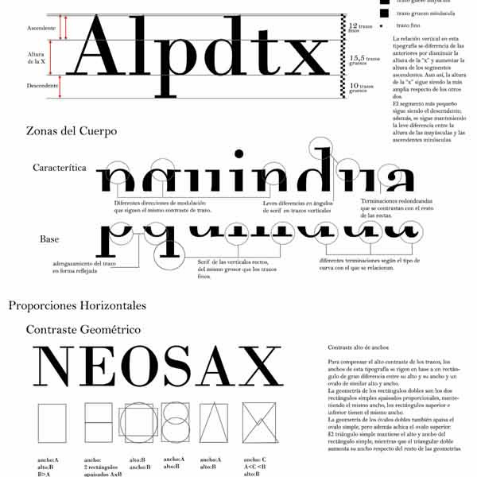

Tipografía
Análisis según epocas
Se eligen una o das tipografías analizan sus características, correspondientes a las siguientes épocas: Renacentista (Bembo y Palatino), Barroco (Caslon y Ehrhardt), neoclásica (Bell), Romántica (Bodoni), Realista (Franklin gothic y Universe) y Geomética (Gill sans y Avant garde).
Bembo
Bembo es el nombre dado a una serifa o tipo de letra revivido en el siglo XX creado por Francesco Griffo alrededor de 1495.
Palatino
Palatino es un tipo de letra creado por el diseñador Hermann Zapf en 1948. Llamada así en honor del maestro escritor del siglo XVI(...)
Caslon
Caslon se refiere a una extensa familia de tipos de letra que se originan en los tipos dibujados y fundidos por el tipógrafo inglés William Caslon.(...)
Erhardt
Ehrhardt es un fuente sefif estilo antiguo que se cree que ha sido diseñado por Miklós (Nicolás) Tótfalusi Kis.

Bell
Tipografía diseñada por Richard Austin en 1788 cuando trabajaba para la John Bell’s British Type Foundry.
